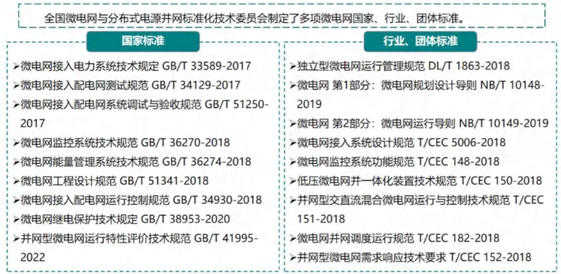
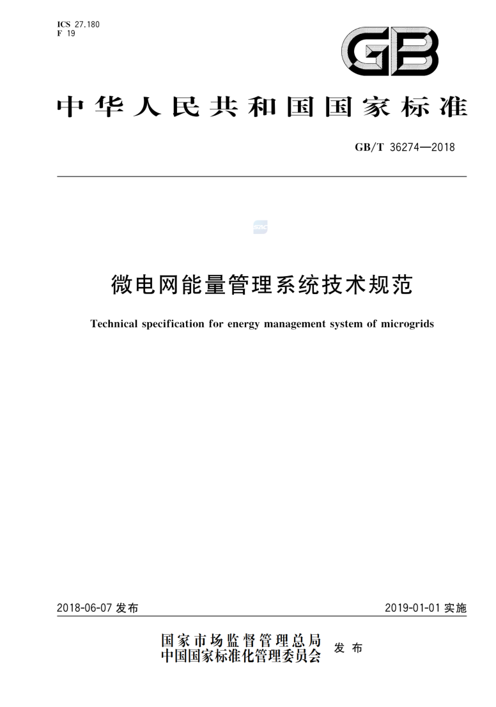
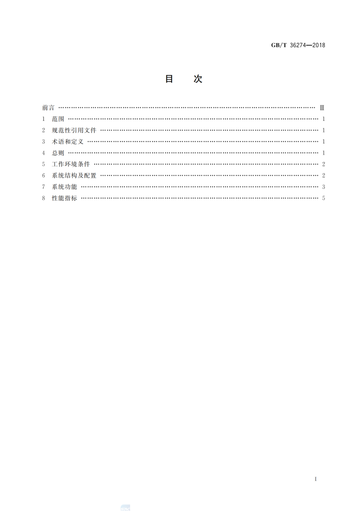
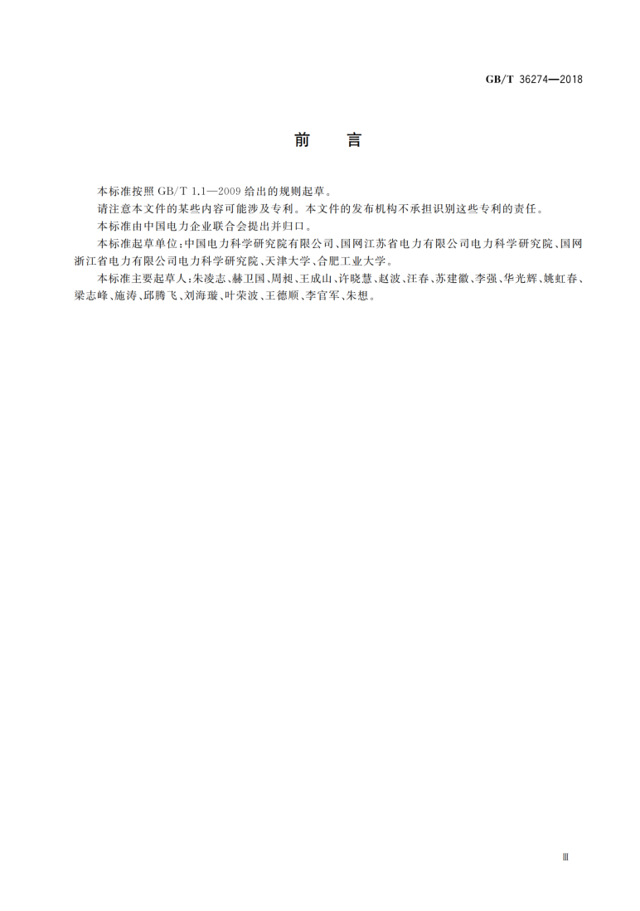
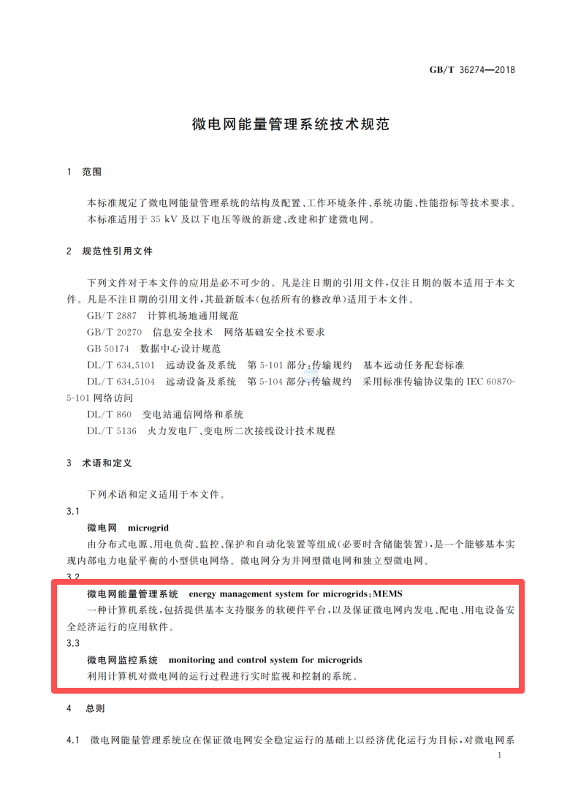
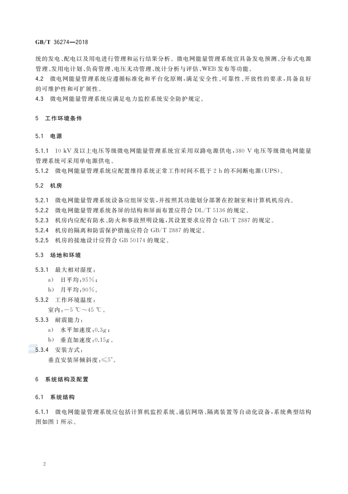
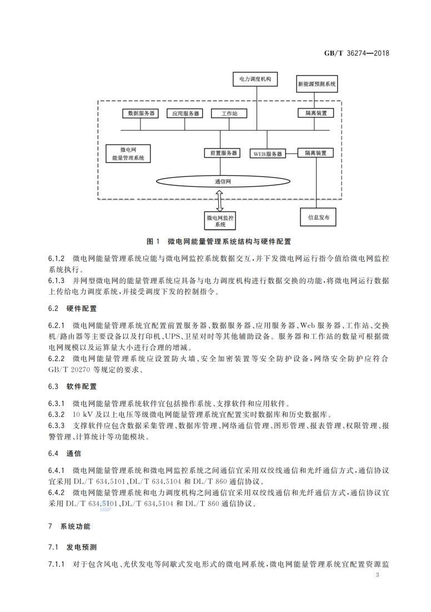
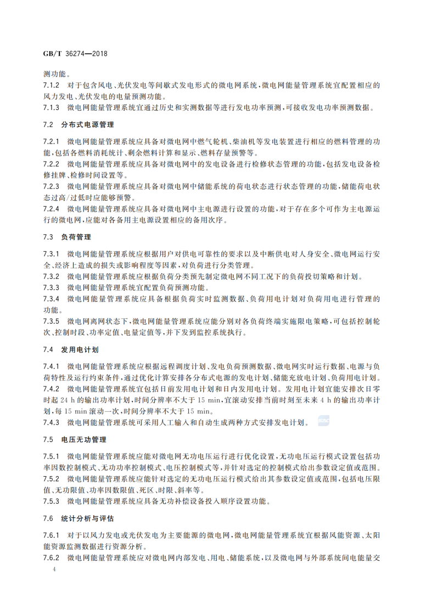
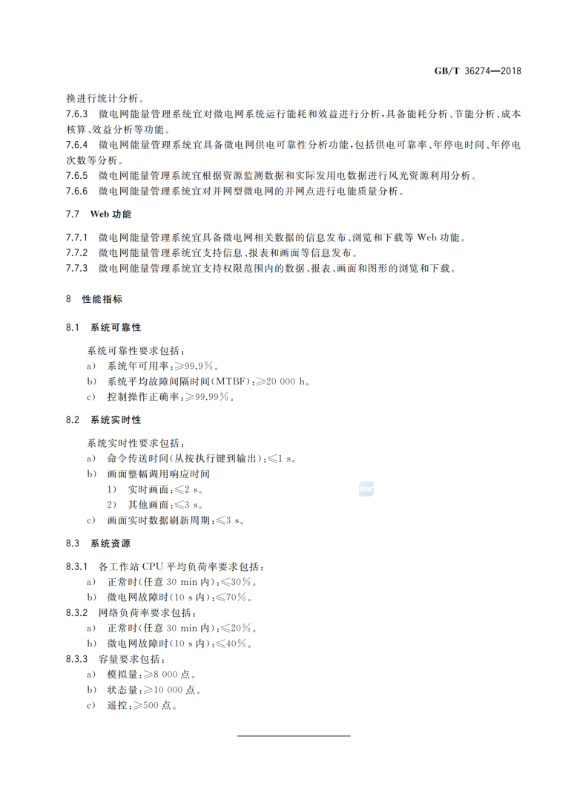

【标准】微电网标准1：GBT 42731-2023《微电网技术要求》
【标准】微电网标准3：GBT 51341-2025《微电网工程设计标准》
【标准】微电网标准4：GB/Z 120.305-2026《微电网 第3-5部分：微电网监控及能量系统测试》








注：文章为公开场合的公开资料，笔者仅是收集供同行一起学习，促进行业的发展与共同进步。
下载链接：GBT 36274-2018《微电网能量管理系统技术规范》.pdf
欢迎免费关注，获取更多微电网方案：